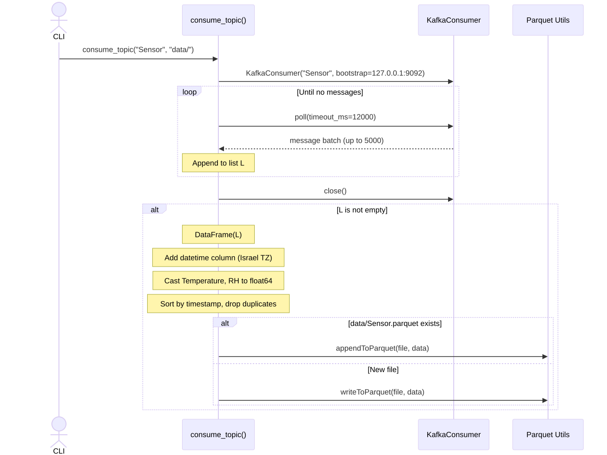
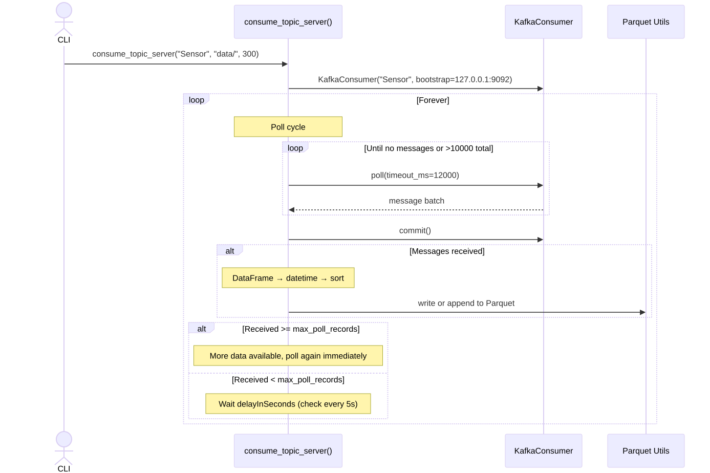

Kafka Consumer API¶
Module: argos.kafka.consumer
The Kafka consumer module reads device telemetry from Kafka topics and persists it as Parquet files — the primary data ingestion path during experiment execution.
Role in the System¶
Devices ──> Node-RED ──> Kafka ──> [this module] ──> Parquet files
consume_topic()
consume_topic_server()
Each device type gets its own Kafka topic (created by the CLI's kafka_createTopics). This module provides two consumer functions:
consume_topic— one-shot: drain all available messages, write to Parquet, exitconsume_topic_server— continuous: poll in an infinite loop with configurable delay
Class Dependency¶

Swimlane: One-Shot Consumption¶

Swimlane: Server-Mode Consumption¶

Implementation Notes¶
Consumer configuration (hardcoded):
| Setting | Value | Notes |
|---|---|---|
bootstrap_servers |
127.0.0.1:9092 |
Single broker |
group_id |
'1' |
All consumers share one group |
auto_offset_reset |
'earliest' |
Start from beginning on first run |
max_poll_records |
5000 |
Batch size per poll |
value_deserializer |
JSON (ASCII) | Messages are JSON strings |
Data transformations:
- JSON messages → Pandas DataFrame
timestamp(ms since epoch) →datetimecolumn (Israel timezone)Temperature,RHfields →float64(if present)- Sort by timestamp, drop duplicates (one-shot mode only)
Known limitations:
- Broker address and group ID are hardcoded
- Deduplication only works within a single consumer run, not across restarts
- No handling of out-of-order messages across partitions
- Server mode checks every 5 seconds during delay, but does not react to new messages during the wait
Functions¶
consume_topic¶
argos.kafka.consumer.consume_topic(topic, dataDirectory)
¶
Consume all available messages from a Kafka topic and write to Parquet.
Connects to Kafka, polls messages until no more are available,
converts them to a Pandas DataFrame, and writes/appends to a
Parquet file named <topic>.parquet in the data directory.
The data pipeline applies:
- JSON deserialization of each message
- Timezone-aware datetime column (Israel timezone) from
timestamp - Numeric casting for
TemperatureandRHfields - Duplicate removal based on timestamp
Parameters:
| Name | Type | Description | Default |
|---|---|---|---|
topic
|
str
|
The Kafka topic name to consume from (typically a device type name). |
required |
dataDirectory
|
str
|
Directory where the Parquet file will be created/appended. |
required |
Source code in argos/kafka/consumer.py
consume_topic_server¶
argos.kafka.consumer.consume_topic_server(topic, dataDirectory, delayInSeconds)
¶
Continuously consume from a Kafka topic with periodic polling.
Runs in an infinite loop, polling the topic and writing data to Parquet. Designed for long-running server-mode operation.
Each cycle:
- Polls messages until none are received or 10,000+ accumulated
- Commits offsets
- Writes/appends to Parquet
- If fewer than
max_poll_recordsreceived, waitsdelayInSeconds
Parameters:
| Name | Type | Description | Default |
|---|---|---|---|
topic
|
str
|
The Kafka topic name to consume from. |
required |
dataDirectory
|
str
|
Directory where the Parquet file will be created/appended. |
required |
delayInSeconds
|
float
|
Seconds to wait between poll cycles when data rate is low. Checks every 5 seconds during the wait period. |
required |
Source code in argos/kafka/consumer.py
102 103 104 105 106 107 108 109 110 111 112 113 114 115 116 117 118 119 120 121 122 123 124 125 126 127 128 129 130 131 132 133 134 135 136 137 138 139 140 141 142 143 144 145 146 147 148 149 150 151 152 153 154 155 156 157 158 159 160 161 162 163 164 165 166 167 168 169 170 171 172 173 174 175 176 177 178 179 180 181 182 183 184 185 186 187 188 189 190 191 192 193 194 195 196 197 | |